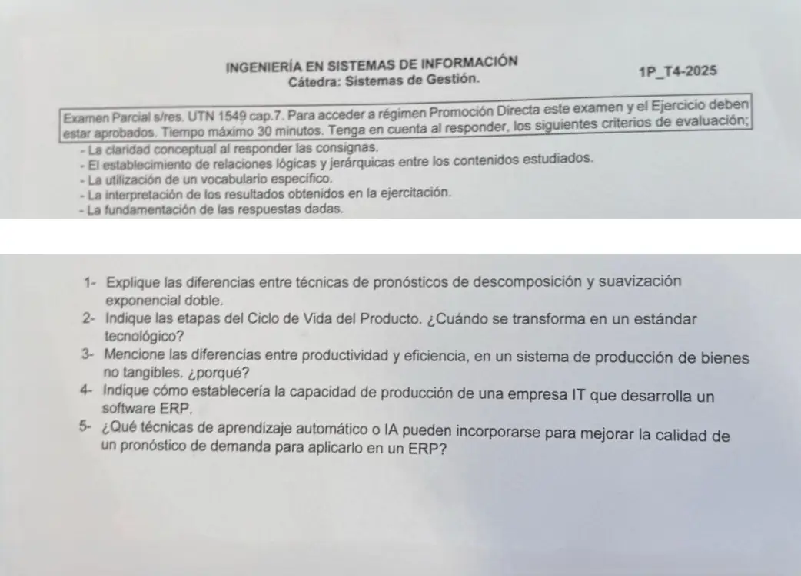

1° parcial 2025, teoría, tema 1
1° parcial, 2025
Enunciado


Propuesta de respuesta
Respuesta no verificada. La propuso Luta Studios con inteligencia artificial y ningún docente la revisó. Puede tener errores.
1. Descomposición contra suavización exponencial doble.
| Descomposición | Suavización doble (Holt) | |
|---|---|---|
| Qué hace | Separa la serie en tendencia, ciclo, estacionalidad e irregular | Suaviza el nivel y la tendencia, con dos ecuaciones |
| Qué se elige | Nada. La tendencia sale de una regresión y los índices, de promedios móviles y medianas | para el nivel y para la tendencia. Con es el método de Brown |
| Estacionalidad y ciclo | Los mide | No los trata. La estacionalidad la agrega Winters, con |
| Qué datos pesan | Todos los años entran en los índices y en la recta | Los recientes pesan más, y la tendencia se actualiza en cada período |
| Para qué | Pronosticar y también comprender los datos | Pronosticar, con |
(Hanke, págs. 126 a 132 y 166 a 186.) El libro avisa que a Holt a veces lo llaman doble.
2. Ciclo de vida. Son cuatro, según las preguntas frecuentes. Hanke dibuja las tres primeras.
| Etapa | Qué pasa con la demanda |
|---|---|
| Introducción | Sube lento. Es la única que no determina el mercado |
| Crecimiento | Sube rápido |
| Madurez y saturación | Se aplana |
| Declinación | Baja |

(Hanke, figura 5-4, pág. 172, y Preguntas frecuentes, págs. 1 y 2.)
Se transforma en estándar tecnológico cuando, pasadas las etapas, mantiene una demanda estable durante años, como los teléfonos de línea. Declina si aparece un producto mejor o si deja de hacer falta (Preguntas frecuentes, pág. 10).
3. Productividad y eficiencia en bienes no tangibles.
- Productividad, salidas divididas por entradas, y es relativa (Chase, págs. 28 y 29). En un intangible la salida cuesta contarla. No admite stock, es individualizada, la calidad está en el proceso y se mide por número de clientes (Preguntas frecuentes, pág. 1). Por eso se usan medidas parciales, como clientes por hora hombre (Chase, págs. 28 y 29).
- Eficiencia, hacer algo al costo más bajo posible (Chase, pág. 6), o la producción real contra un parámetro (pág. 169).
- Por qué no son lo mismo. La productividad mide cuánto sale por cada insumo. La eficiencia mide el costo contra un estándar. En un mostrador, poner pocos empleados es eficiente, pero la fila crece y los clientes se van (Chase, pág. 6). Si se mide en clientes atendidos por hora hombre, la productividad también cae cuando los clientes se van, aunque el costo haya bajado.
4. Capacidad de una empresa de TI que desarrolla un ERP. Chase no trata este caso, así que se aplica lo que sí dice.
- La capacidad es la cantidad de recursos disponibles para producir dentro de un período, siempre relativa al tiempo (Chase, pág. 122). Acá el recurso principal son las horas hombre de desarrollo por mes.
- Los tres pasos de Chase (págs. 128 y 129). Pronosticar la demanda de cada producto (módulos, implantaciones, mantenimiento), calcular la mano de obra y el equipo que requieren, y proyectar lo disponible en el horizonte.
- Para cada equipo de trabajo vale , el tiempo de carga por el rendimiento global (Preguntas frecuentes vFinal, #13), y la capacidad total es la suma.
- Un servicio no admite stock, así que la capacidad tiene que cubrir los picos, con un colchón (Chase, pág. 129), y se controla con el índice de utilización (pág. 124).
- Las decisiones van por horizonte. A largo plazo, oficinas e infraestructura. A mediano, contratar o subcontratar. A corto, horas extra o mover gente entre proyectos (Chase, pág. 122).
5. Aprendizaje automático o IA para el pronóstico en un ERP. Sin propuesta. No hay material de esto en el Drive.
Respuesta no verificada. Puede tener errores.
Se armó con 1° parcial, secciones Suavización exponencial, Holt y Winters, Descomposición, Producto y ciclo de vida, Productividad, eficiencia y eficacia y Capacidad.
Quedó en duda: En 1 se tomó «suavización exponencial doble» como Holt. El libro tiene también el promedio móvil doble y el método de Brown. En 2, Hanke da tres etapas y las preguntas frecuentes, cuatro. La 4 es una aplicación propia de las ideas de Chase, que no trata empresas de software. En 3 y 4 se cruzan las definiciones del libro con la tabla de bienes intangibles de las preguntas frecuentes, que es una recopilación sin firma.
¿Cómo te fue?
Marcá cada tema del examen.
- DescomposiciónDescomposición, en 1° parcial
- Ciclo de vidaProducto y ciclo de vida, en 1° parcial
- ProductividadProductividad, eficiencia y eficacia, en 1° parcial
- CapacidadCapacidad, en 1° parcial
- Inteligencia artificialERP e inteligencia artificial, en 1° parcial